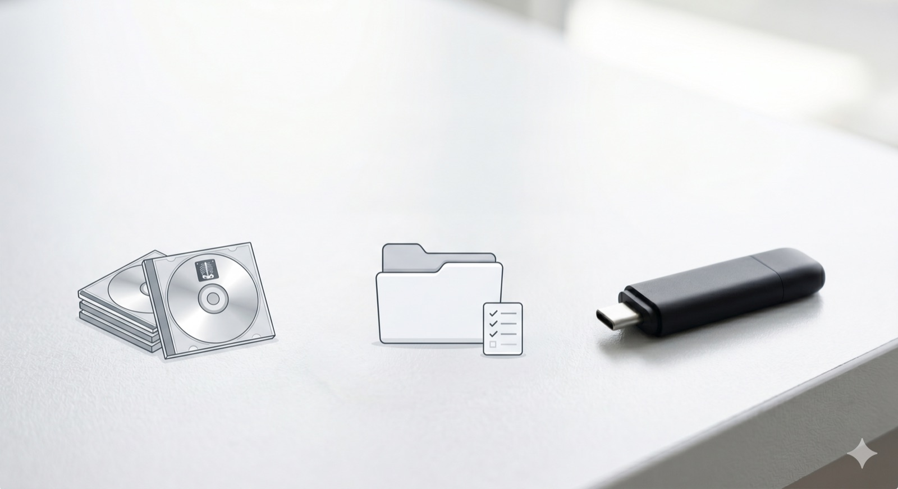

Download — free ↓All your imaging scans, on one USB drive for your doctor.
A free desktop app that turns a stack of hospital CDs into a single, organized medical-imaging archive any radiologist can open — without the technical headaches.
Why this exists
If you or a family member has collected imaging CDs over the years — MRIs, CTs, X-rays from different hospitals — you know the problem: each disc is on its own, the discs are slowly degrading, and any doctor trying to compare studies across time has to juggle twenty different viewers. Important history gets lost in a drawer.
This tool brings it all together. It copies each CD onto your computer, makes a plain-language inventory of every study, and builds one standards-compliant DICOM archive on a USB drive. Hand that single drive to your radiologist and everything loads at once — into any PACS or viewer.
It is built for patients and the families helping them, for longitudinal review and second opinions. Your data never leaves your computer: there is no account, no cloud, no tracking, and no internet connection required to use it. It is not a diagnostic tool and does not replace professional radiological review.
Three simple steps
- 1 · RipInsert each CD; it copies and ejects, then waits for the next one.
- 2 · ReviewSee a clear spreadsheet of every study found across all your discs.
- 3 · DeliverBuild one archive and copy it, verified, to a USB drive for your doctor.
Download — free
Download Version 0.1.0Or choose your system: macOS (.dmg) · Windows (.exe)
macOS 12 or newer · Windows 10 or 11 (64-bit)
Signed installers arrive with the first full release. For now this links to the source preview on GitHub.
Free, forever. If it helped you, consider supporting the project →